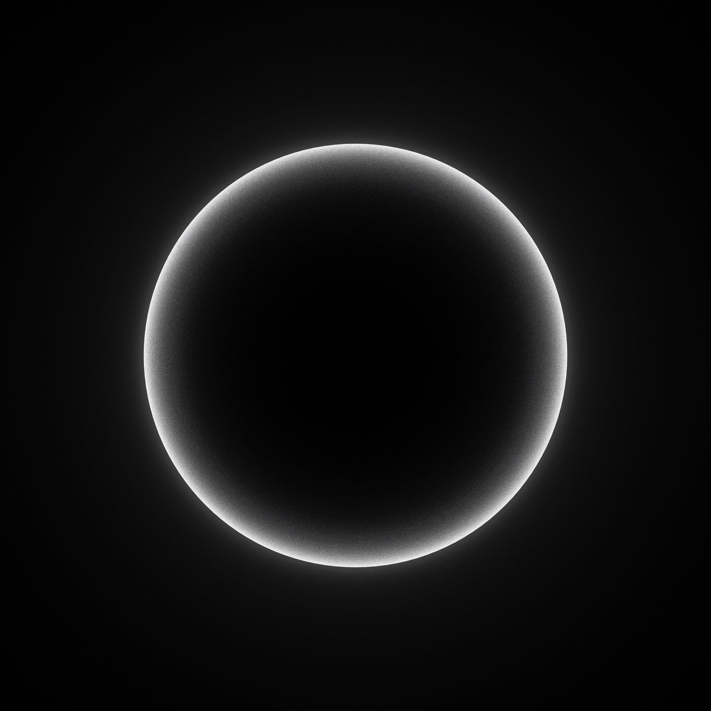

Light/Dark is an EP built on contrasts, where opposing forces meet and merge into a cinematic journey. Across its four tracks, the EP shifts between deep, brooding textures and soaring, epic harmonies, evoking a spectrum of emotions.
Through intricate soundscapes and expressive melodies, Light/Dark Creates Moments of darkness that are met with glimmers of light.
Listen to Light/Dark: